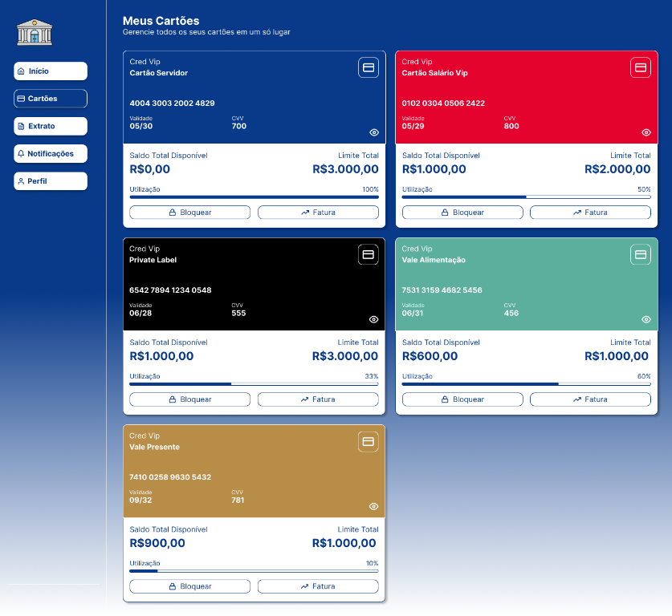

Dashboard Bancário

Sobre o projeto
Este projeto consiste na interface de um sistema de gestão financeira pessoal, criado para facilitar o acompanhamento de várias contas e cartões em um só lugar. O dashboard apresenta uma visão consolidada dos saldos e das movimentações, priorizando uma navegação clara e intuitiva.
Funcionalidades
- Resumo do saldo disponível, limites e transações recentes.
- Visualização de cartões de crédito, salário, alimentação e cartões de loja, com limites utilizados e disponíveis.
- Consulta ao extrato financeiro com filtros por categoria.
- Modo de privacidade para ocultar valores em ambientes públicos.
- Layout adaptado para diferentes telas.